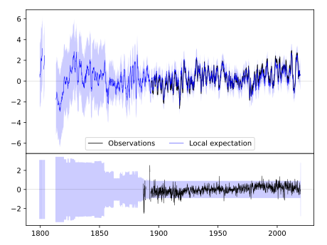
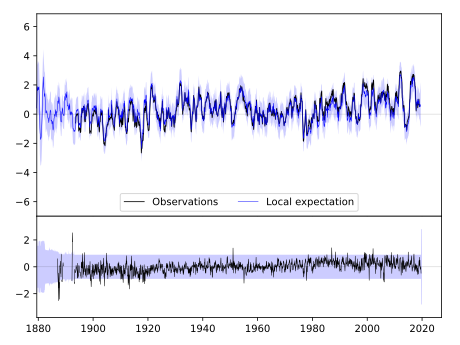
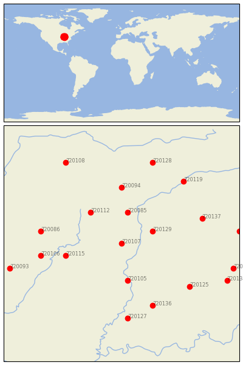

PARIS WTR WKS [USA]


| Neighbour | Name | Country | Distance | Lon/Lat | Years |
|---|
| 720107 | PARIS WTR WKS | USA | 0 | -87.7, 39.6 | 1886-2019 |
| 720129 | ROCKVILLE | USA | 48 | -87.2, 39.8 | 1862-2019 |
| 720085 | DANVILLE | USA | 56 | -87.6, 40.1 | 1893-2019 |
| 720105 | PALESTINE | USA | 67 | -87.6, 39.0 | 1882-2019 |
| 720112 | URBANA | USA | 70 | -88.2, 40.1 | 1888-2019 |
| 720115 | WINDSOR | USA | 80 | -88.6, 39.4 | 1885-2019 |
| 720094 | HOOPESTON 1 NE | USA | 100 | -87.7, 40.5 | 1887-2019 |
| 720086 | DECATUR WTP | USA | 113 | -89.0, 39.8 | 1875-2019 |
| 720106 | PANA 3E | USA | 113 | -89.0, 39.4 | 1869-2019 |
| 720136 | WASHINGTON 1 W | USA | 119 | -87.2, 38.6 | 1893-2019 |
| 720137 | WHITESTOWN | USA | 119 | -86.4, 40.0 | 1893-2019 |
| 720125 | OOLITIC PURDUE EX FR | USA | 122 | -86.6, 38.9 | 1893-2019 |
| 720127 | PRINCETON 1 W | USA | 133 | -87.6, 38.4 | 1884-2019 |
| 720119 | DELPHI 2 N | USA | 140 | -86.7, 40.6 | 1893-2019 |
| 720128 | RENSSELAER | USA | 150 | -87.2, 40.9 | 1864-2019 |
| 720134 | SEYMOUR 2 N | USA | 160 | -86.0, 39.0 | 1887-2019 |
| 720093 | HILLSBORO | USA | 160 | -89.5, 39.2 | 1893-2019 |
| 720118 | COLUMBUS | USA | 160 | -85.9, 39.2 | 1884-2019 |
| 720108 | PONTIAC | USA | 163 | -88.6, 40.9 | 1886-2019 |
| 720121 | GREENFIELD | USA | 164 | -85.8, 39.8 | 1893-2019 |